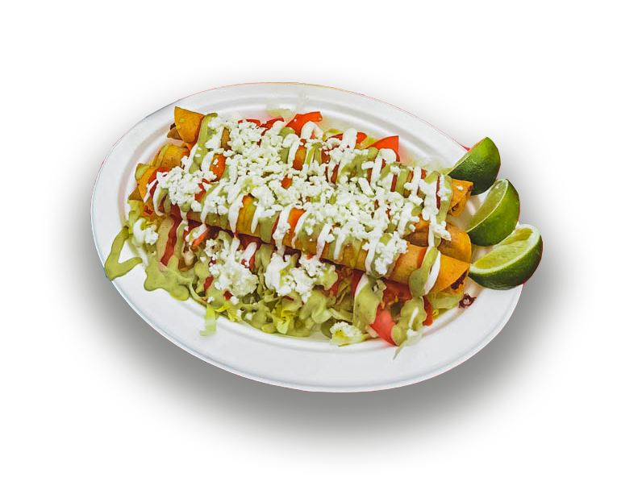

Chicken Flautas

Description
A taquito, taco dorado, rolled taco, or flauta is a Mexican dish that
typically consists of a small rolled-up tortilla that contains filling,
including beef, cheese or chicken. The filled tortilla is then shallow-fried
or deep-fried. The dish is often topped with condiments
such as sour cream and guacamole.
Ingredients
- Mexican Corn Tortillas: La Poblanita, Tortilleria Chinantla, etc.
- Meat: Homemade Shredded Chicken, Rotisserie Chicken, Whole Chicken
- Salsa
- Cheese(s): Cotija, Oaxaca, Monterey
Steps
- Once your meat of choice is fully cooked, add it to a flat tortilla and tightly roll it
ensuring to place them seam down.
- Heat 1 cup oil in a nonstick pan over medium-high heat until 325 degrees F.
- Once hot, add 2-4 flautas seam side down in oil.
- Fry, turning as needed until golden brown on all sides, 3 to 4 minutes, adjusting burner
as necessary to maintain oil temperature so they don’t fry too quickly.
- Remove flautas from hot oil, allow them to cool down for 30 seconds, then top with your choice of
salsa, cheeses, and lettuce.
- Enjoy!